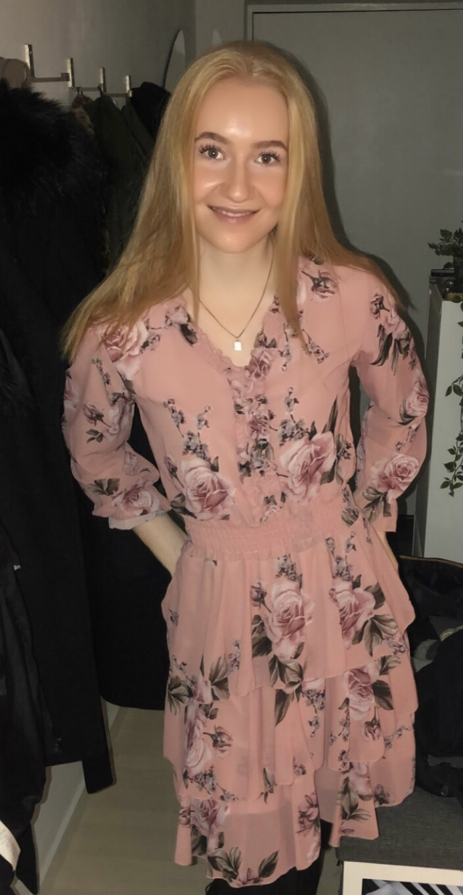

Kirstines portfolie
Om mig

Fritid
Jeg hedder Kirstine og 21 år gammel. Jeg bor i Rødovre med min kæreste. Jeg startede med at studere mulitmediedesign på KEA i sommer. Jeg elsker at være sammen med mine venner/veninder. Jeg elsker at drikke en god kaffe og have dybe samtaler, lige så meget som jeg elsker at tage ud og have en vild bytur. Jeg kan godt lide at tage i fitness, shoppe og gå langeee ture.
Passion
Jeg er helt vildt glad for mit studie, og føler jeg endelig har fundet noget, som jeg kan fordybe mig med i flere timer, og som jeg ønsker at blive bedre til hele tiden. Jeg føler, at jeg har fundet noget, som jeg har en passion for, og som jeg ved jeg vil blive glad for at arbejde med i fremtiden.